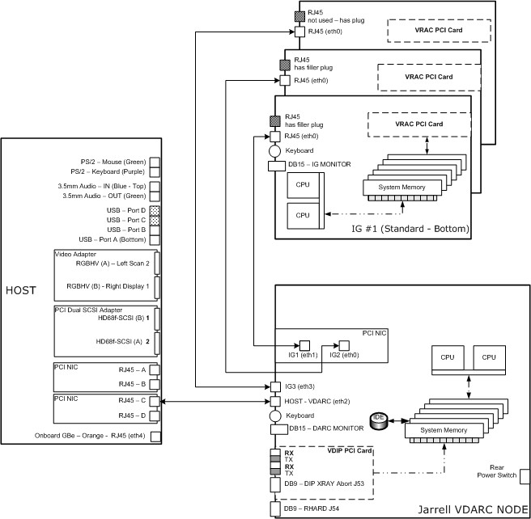
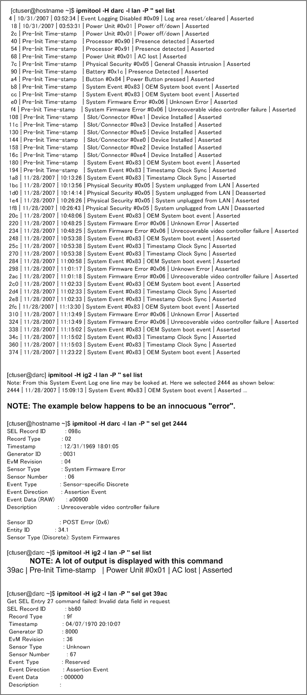

Operating Documentation
Direction 5193574-800, Rev# 22
LightSpeed 7.X Service Methods
Module Version 2.0, Version Date 6/11/09
Operating Documentation |
This document provides manual commands for VDARC Node troubleshooting. Not every available command is listed. The first step is to verify communication between the Host and the VDARC Node. After verifying that the communication exists to the VDARC Node, VDIP diagnostics may be performed. Memory size is important and may be checked: however, exact memory values expected are not discussed as this memory size value may change over time and with different types of VDARC Nodes offered. It is currently (July, 2006) around 6 GBytes for Main memory.
Application software can be started to verify that Image Generation is running on each VIG Node present and configured in the Operator Console. The VDARC Node contains the software and hardware that controls the VIG Nodes. The Image Generation check assists by determining if the VIG Node(s) is up (as we determine up and ready for recon) and under VDARC Control. Refer to the Ethernet Diagrams to understand connections between Nodes. Refer to the command list to determine which commands can be performed.
| NOTE: | It is important to understand that the VDARC Node may not boot up properly due to a Disk Array issue. |
A VDARC / VIG Node Troubleshooting Video cable is shipped with every VCT Operator Console. Utilize this cable whenever attempting to troubleshoot the VDARC and VIG Nodes. The cable should not be connected at either end when the system is operating normally, since the video may take over the monitor and cause Customer confusion. Additionally, connecting only the Node end of the cable will result in EMC violations. Sometimes the VDARC Node requires a keyboard connection (such as pressing [Enter] to view VDARC output). It is permitted to use the Operator Console keyboard when troubleshooting the VDARC Node.
The VIG Nodes require a manual re-power process so each VIG Node present and configured (via LFC or a reconfig) can be initialized by the VDARC Node. The Application software should be down during VIG Node initialization. The VDARC must successfully remote shell from the Host (rsh darc). LAN LED activity should be verified on each VIG Node to ensure that an Ethernet communication between the VDARC and VIG Node is present. Then the front panel re-power sequence is performed for any VIG Nodes that have been swapped (physical Node swap, or one end of the Ethernet cable between the Nodes), installed, or are having issues. The user should wait for the VIG Nodes to successfully boot up. The user should then verify that each VIG Node can be communicated with via the VDARC Node (rsh ig#). If the remote shell to each VIG Node is successful, the user may decide to verify lhinv Main memory and perform vrac_flash_update, then the vrac_menu -a diagnostic tool.
Application software may be started and Image Generation should be verified as running. Verify that the prompt returned for each rsh ig# is as expected. If the prompt is not correct it is usually a software issue with the VDARC Node, and a VDARC software reload is the first step to correct the issue. If image_generation is not running on a specific VIG Node, physically swap one end of the Ethernet cable and re-power the VIG Nodes with Application software down. If the issue follows the VIG Node, then a replacement VIG Node may be ordered. Always verify the part number on the replacement hardware upon receipt of a FRU. The labels on shipping boxes can be incorrect (a PAR looks just like a VIG Node but does not contain a vrac board).
The Host software cannot be loaded (OS and Apps) after the VDARC software. If the Host software was started, the VDARC software must follow. Failure to perform procedures in the specified order may result in startup issues. In this case, the ssh (Security Shell) command from Host to VDARC will fail and Application software will not launch properly or may shutdown.
Updating documents in a timely manner is sometimes impossible. Always verify that all Service Packs or patches are loaded after any VDARC software reload. In the past, certain patches were specifically targeted to correct recon issues and they needed to be reloaded. The setdate command is performed during an LFC twice. Verify that the Host setdate time is entered from a reliable source (laptop) anytime it is updated.
The following illustrations show the Ethernet connections between the various Nodes-Host, VDARC, and VIG. Two versions are provided and are specifically referenced to the particular VDARC Node version (Westville or Jarrell). The Westville VDARC Node rear panel has 6 Ethernet ports available for connection between the Host (1 port) and the VIG Nodes (5 ports available, although only 3 are used). The Jarrell VDARC Node rear panel has 4 Ethernet ports available for connection between the Host (1 port) and the VIG Nodes (3 ports). The VDARC Node Ethernet address associated with the Host or with each VIG Node is not the same specifically because the number of ports available for each VDARC Node version is different.
Illustration 1: Westville VDARC Node Ethernet Interconnect Diagram

Illustration 2: Jarrell VDARC Node Ethernet Interconnect Diagram

The following is a list of manual input commands.
| [root@hostname] ifconfig | Allows the user to determine what the Host understands in relation to the Ethernet Address / port for the DARC Node. When a VDARC Node is configured /active in the system, look for RUNNING and verify that the address is correct. The connection is always port C on the Host. Even if you see RUNNING, there still could be a swapped connection (like DARC cable connected to Gantry and Gantry connected to DARC). Also, if the Host Apps is not loaded, there will only be the l/O present. |
| [root@hostname] ipmitool -I lan -H darc -A NONE chassis power status | The ipmitool may be available. This command allows the user to determine what the Host understands in relation to the power state for the VDARC Node. |
| [root@hostname] ethtool -p eth#[root@darc] ethtool -p eth# [root@ig#] ethtool -p eth# | The ethtool command allows the user to visually verify that the NIC is working. After the command is entered, the user will visually verify that one LED at the NIC is blinking much faster. To stop the process, press <Ctrl-C>. This can be performed on the host, VDARC, or VIG Node. Replace the number symbol # with the Ethernet port (eth1 is ig1 on the darc). |
| [root@hostname] service darcpower start | Restarts the VDARC Node power. This is useful when the Host is up but the VDARC was re-powered and does not seem to come up and ping in a timely manner. |
| [root@hostname] service darcpower stop | Turns off the VDARC Node power. |
| [root@darc] halt | Halts the VDARC Node so power can be turned off without losing files on the VDARC or hardware. |
| [root@darc ~] smartctl -a/dev/sd* (where * = sda thru sdh) | Verifies the “SMART Health Status” output for potential failing disk(s) in the Disk Array (JBOD). Perform this with Application software down. The issue presents itself as the VDARC not booting. By performing a telnet from Host to VDARC Node, the user can perform the reset, then console commands, and then 'hit any key' to boot the VDARC Node and mount the Disak Array (if possible). The smart control command will provide a predictive failure message. All disks must be checked and any disks with a predictive failure must be replaced. See the GOC5 Disk Array T/S guide for more detailed information. |
| [root@hostname] service cliservice start | Restarts or verifies that the cliservice dpcproxy server is running on the Host to allow for Serial Over LAN (SOL). Returning message will be either: The dpcproxy is running, or dpcproxy cliservice has been restarted. Hint: Try reloading the SOL CD into the DARC Node and then pressing Reset or cycling power, as needed, with Apps down. |
telnet localhost 623 Server: darc Username: <Enter> Password: <Enter> Login successful dpccli> reset ok console | Verifies dpcproxy server running / SOL connection. Resets the
VDARC Node. Allows the user to watch the VDARC Node boot up. Hint: If a T/S monitor cable is available, connect this cable between the Host and VDARC. (Use the keyboard and press <Enter> to prompt the DARC response if needed.) |
| ping darc | Press <Ctrl-C> to stop the ping process. |
| rsh darc | OS and Apps software must be loaded on the VDARC Node. |
| ssh darc Commands to fix ssh: [root@hostname] rm -rf /usr/g/ctuser/.ssh/known_hosts [root@hostname] config_sshd [root@darc] service sshd start [root@darc] chkconfig sshd on | OS and Apps software must be loaded on the Host first, then the VDARC Node for Security Shell (ssh) to work. If you cannot ssh darc then Apps will eventually shutdown. See commands to fix ssh. |
| [root@hostname] rm -rf /usr/g/ctuser/.ssh/known_hosts upon failure, start: [root@hostname] config_sshd if start fails, config: [root@darc] service sshd start if config fails, check: [root@darc] chkconfig sshd on | Additional ssh related commands. |
| cd /var/log more messages | A status log on the VDARC Node can assist in determining issues (used in conjunction with the log on the Host). |
| lhinv | Lists devices, memory. |
| lhinv | grep Main | Lists memory size. |
| cat /proc/mdstat | Displays md0 and active devices for the RAID. |
telnet localhost 623 Server: darc Username: <Enter> Password: <Enter> Login successful dpccli> help | Shows the Help menu for commands / options. |
telnet localhost 623 Server: darc Username: <Enter> Password: <Enter> Login successful dpccli> console | Verifies dpcproxy server running / SOL connection. Lists the VDARC Node information and current OS and kernel information. |
| See ”DARC Fiber Optic Test” document | Assists with a visual indicator for the VDIP path from the Gantry to the VDARC Node. |
| [root@darc] lsmod | grep vdip | Checks the existence of a VDIP in the VDARC Node. |
| [root@darc] vdip_menu -A or [root@darc] vdip_menu -A -r 1 | No Loopback Cable installed. One pass (-r 1) of all (-a) VDIP diagnostics performed on VDARC Node. The pass value can be changed to a greater value for more iterations, or for a single pass, it may be excluded all together (vdip_menu -A). |
| [root@darc] vdip_menu -a or [root@darc] vdip_menu -a -r 1 | Loopback Cable installed between each respective RX and TX port. Both ports must be connected with the loopback cable, and the fiber connection must be fully clicked into place. A flashlight may be used to verify a good cable path. One pass (-r) of all (-a) VDIP diagnostics performed on VDARC Node. The pass value can be changed to a greater value for more iterations, or for a single pass, it may be excluded all together (vdip_menu -a). |
| [root@darc] dmidecode | grep -i version or [root@darc] dmidecode | grep Ver | Shows VDARC Node BIOS version as loaded by the vendor. |
| uname -a | Displays kernel name, hostname, kernel release and version, machine hardware name, and hardware platform. |
| free -m | Does not adequately display VDARC Node total memory information, but does display used memory. |
| cat /proc/meminfo | Displays detailed memory information. |
| df -h | Displays partition information. |
| cat /proc/devices | Lists all devices detected by the system. |
| [root@darc] dmidecode | less | Shows the Motherboard version. |
| {ctuser@host} ipmitool -I lan -H darc -P '' sel | Basic comm. over SOL, and log status. |
| {ctuser@host}ipmitool -H darc -P '' chassis power status | Check chassis power behavior at boot. |
| {ctuser@host} ipmitool -H darc -P '' fru | Lists board components. |
| {ctuser@host}ipmitool -H darc -P '' sdr type temp | Component temperature checks. |
| {ctuser@host}ipmitool -H darc -P '' sel list last 15 | Lists all board sensors. Many details. Look for OKs. |
| {ctuser@host} ipmitool -H darc -P '' sdr | Simplified board sensors. Look for OKs. This has replaced sensors -v. |
| [root@ig#]ps -leaf | grep -v grep | grep image_generation | With APPS Up ONLY, provides a clue that recon is up and running on the specific VIG Node. (Do not perform this command on the VDARC Node - it is not updated properly there.) |
| [root@darc] safte-monitor -p | grep -I power | Displays if both power supplies are operational for the VCT Disk Array. |
| [root@darc] safte-monitor -p | grep -I fan | Displays if both fans are operational for the VCT Disk Array. |
| [root@darc] grep -ic nstor /proc/scsi/scsi | A return of #2 verifies that the VDARC Node can see the VCT Disk Array. If #2 is not returned, SCSI cables may be suspect. |
| [root@darc bin] ./gre-file-perf -s 15 /raw_data | With Apps up, should display success for the VCT Disk Array and properly created and assembled. |
In the following output, we can clearly see that the Jarrell VIG (referred to a virgin because it came from the vendor - not initialized) was installed into IG1 (eth1) and the IG1 came up and successfully ran vrac_flash_update. Then Apps is started and that process shows image_generation will be good.
Sep 29 00:49:35 darc in.tftpd[9011]: tftp: client does not accept options
This message will go away after several files are authenticated (authenticated mount request from ig#).
The “martian” messages are present because all Jarrell VIG’s are set to 172 base address - the same as the VDARC address. These messages will go away one the VIG is initialized (power cycle the VIG Node with VDARC up but Apps down) to the VDARC.
Sep 28 21:18:48 darc kernel: martian source 172.16.0.2 from 172.16.0.2, on dev eth1
This message will go away after several files are authenticated.
(authenticated mount request from ig#) Sep 29 00:49:35 darc in.tftpd[9011]: tftp: client does not accept options
The eth1 is finally initialized.
The link for eth1 goes up and down until it hits 1000 Mbps.
Then we get the DHCPACK.
Then the various files are loaded in: authenticated mount request from ig1
And the tftp client does not accept options message goes away because of prior message shown above.
The eth1 was finally initialized.
Then we see: started check of VRAC FLASH; argv=['ig1', 'ig2', 'ig3'].
And finally vrac_flash_update has completed successfully.
Sep 28 21:36:28 darc vrac_flash_update[9242]: FLASHed 3 of 3 IGs Sep 28 21:36:28 darc vrac_flash_update[9242]: all IGs FLASHed
Apps is started up and all IG Nodes respond and report that recon control is up:
Sep 28 21:38:25 darc logger: is_IG_up 3 ig1 called Sep 28 21:38:25 darc logger: is_IG_up 3 ig2 called Sep 28 21:38:25 darc logger: is_IG_up 3 ig3 called Sep 28 21:38:25 darc is_IG_up:[recon_control:10834]: ig1 is up Sep 28 21:38:25 darc is_IG_up:[recon_control:10840]: ig3 is up Sep 28 21:38:25 darc is_IG_up:[recon_control:10837]: ig2 is up
Example of a darc log
Sep 28 21:27:30 darc kernel: martian source 172.16.0.2 from 172.16.0.2, on dev eth1 Sep 28 21:27:30 darc kernel: ll header: ff:ff:ff:ff:ff:ff:00:04:23:de:26:10:08:06 Sep 28 21:27:34 darc kernel: e1000: eth1: e1000_watchdog_task: NIC Link is Down Sep 28 21:31:05 darc kernel: e1000: eth1: e1000_watchdog_task: NIC Link is Up 100 Mbps Full Duplex Sep 28 21:32:36 darc kernel: e1000: eth1: e1000_watchdog_task: NIC Link is Down Sep 28 21:32:38 darc kernel: e1000: eth1: e1000_watchdog_task: NIC Link is Up 100 Mbps Full Duplex Sep 28 21:32:53 darc kernel: e1000: eth1: e1000_watchdog_task: NIC Link is Down Sep 28 21:32:54 darc kernel: e1000: eth1: e1000_watchdog_task: NIC Link is Up 100 Mbps Full Duplex Sep 28 21:33:11 darc kernel: e1000: eth1: e1000_watchdog_task: NIC Link is Down Sep 28 21:33:13 darc kernel: e1000: eth1: e1000_watchdog_task: NIC Link is Up 100 Mbps Full Duplex Sep 28 21:33:15 darc kernel: e1000: eth1: e1000_watchdog_task: NIC Link is Down Sep 28 21:33:19 darc kernel: e1000: eth1: e1000_watchdog_task: NIC Link is Up 1000 Mbps Full Duplex Sep 28 21:33:26 darc dhcpd: DHCPDISCOVER from 00:0e:0c:9f:36:52 via eth1 Sep 28 21:33:27 darc dhcpd: DHCPOFFER on 10.0.1.2 to 00:0e:0c:9f:36:52 via eth1 Sep 28 21:33:28 darc dhcpd: DHCPREQUEST for 10.0.1.2 (10.0.1.1) from 00:0e:0c:9f:36:52 via eth1 Sep 28 21:33:28 darc dhcpd: DHCPACK on 10.0.1.2 to 00:0e:0c:9f:36:52 via eth1 Sep 29 01:33:28 darc in.tftpd[9204]: tftp: client does not accept options Sep 28 21:33:38 darc kernel: e1000: eth1: e1000_watchdog_task: NIC Link is Down ** Sep 28 21:33:40 darc kernel: e1000: eth1: e1000_watchdog_task: NIC Link is Up 1000 Mbps Full Duplex Sep 28 21:33:44 darc dhcpd: DHCPDISCOVER from 00:0e:0c:9f:36:52 via eth1 Sep 28 21:33:44 darc dhcpd: DHCPOFFER on 10.0.1.2 to 00:0e:0c:9f:36:52 via eth1 Sep 28 21:33:44 darc dhcpd: DHCPDISCOVER from 00:0e:0c:9f:36:52 via eth1 Sep 28 21:33:44 darc dhcpd: DHCPOFFER on 10.0.1.2 to 00:0e:0c:9f:36:52 via eth1 Sep 28 21:33:44 darc dhcpd: DHCPREQUEST for 10.0.1.2 (10.0.1.1) from 00:0e:0c:9f:36:52 via eth1 Sep 28 21:33:44 darc dhcpd: DHCPACK on 10.0.1.2 to 00:0e:0c:9f:36:52 via eth1 ** Sep 28 21:33:44 darc mountd[3293]: authenticated mount request from ig1:1005 for /tftpboot/root/ig1 (/tftpboot/root/ig1) Sep 28 21:33:44 darc mountd[3293]: authenticated mount request from ig1:1010 for /bin (/bin) Sep 28 21:33:44 darc mountd[3293]: authenticated mount request from ig1:1011 for /sbin (/sbin) Sep 28 21:33:44 darc mountd[3293]: authenticated mount request from ig1:1012 for /lib (/lib) Sep 28 21:33:44 darc mountd[3293]: authenticated mount request from ig1:1013 for /usr (/usr) Sep 28 21:34:02 darc mountd[3293]: authenticated mount request from ig1:846 for /usr/g (/usr/g) Sep 28 21:35:55 darc pam_rhosts_auth[9225]: allowed to ctuser@oc as ctuser Sep 28 21:35:55 darc rsh(pam_unix)[9225]: session opened for user ctuser by (uid=0) ** Sep 28 21:35:57 darc vrac_flash_update[9242]: started check of VRAC FLASH; argv=['ig1', 'ig2', 'ig3'] Sep 28 21:35:58 darc vrac_flash_update[9242]: ig1: IPMI status 0 Sep 28 21:35:58 darc vrac_flash_update[9242]: ig1: set SOL baud rate to 57600 Sep 28 21:35:59 darc vrac_flash_update[9242]: checking/updating FLASH ig1 Sep 28 21:36:03 darc vrac_flash_update[9242]: ig1: Sep 28 21:36:03 darc vrac_flash_update[9242]: ig1: *** num loads = 3 Sep 28 21:36:03 darc vrac_flash_update[9242]: ig1: *** region size = 0x140000 Sep 28 21:36:03 darc vrac_flash_update[9242]: ig1: Sep 28 21:36:03 darc vrac_flash_update[9242]: ig1: VRAC_FLASH_IMAGE_SIZE=0x140000 Sep 28 21:36:03 darc vrac_flash_update[9242]: ig1: Board ID: 2395084 G Sep 28 21:36:03 darc vrac_flash_update[9242]: ig1: File contains VRAC1 bpp 355 Sep 28 21:36:03 darc vrac_flash_update[9242]: ig1: File contains VRAC1 pbc 452 Sep 28 21:36:03 darc vrac_flash_update[9242]: ig1: File contains VRAC1 image Sep 28 21:36:03 darc vrac_flash_update[9242]: ig1: done reading file '/etc/vrac.elf' Sep 28 21:36:03 darc vrac_flash_update[9242]: ig1: bank 0 checksum okay Sep 28 21:36:03 darc vrac_flash_update[9242]: ig1: bank 1 checksum okay Sep 28 21:36:03 darc vrac_flash_update[9242]: ig1: checking 2621440 bytes starting at region 0 Sep 28 21:36:03 darc vrac_flash_update[9242]: ig1: FLASH image already matches the input file Sep 28 21:36:03 darc vrac_flash_update[9242]: ig1: status=0 Sep 28 21:36:07 darc vrac_flash_update[9242]: ig1: Sep 28 21:36:07 darc vrac_flash_update[9242]: ig1: *** num loads = 3 Sep 28 21:36:07 darc vrac_flash_update[9242]: ig1: *** region size = 0x140000 Sep 28 21:36:07 darc vrac_flash_update[9242]: ig1: Sep 28 21:36:07 darc vrac_flash_update[9242]: ig1: VRAC_FLASH_IMAGE_SIZE=0x140000 Sep 28 21:36:07 darc vrac_flash_update[9242]: ig1: Board ID: 2395084 G Sep 28 21:36:07 darc vrac_flash_update[9242]: ig1: File contains VRAC1 pbc 2002 Sep 28 21:36:07 darc vrac_flash_update[9242]: ig1: File contains VRAC1 bpp 2004 Sep 28 21:36:07 darc vrac_flash_update[9242]: ig1: File contains VRAC1 image Sep 28 21:36:07 darc vrac_flash_update[9242]: ig1: done reading file '/etc/vrac_thin.elf' Sep 28 21:36:07 darc vrac_flash_update[9242]: ig1: bank 0 checksum okay Sep 28 21:36:07 darc vrac_flash_update[9242]: ig1: bank 1 checksum okay Sep 28 21:36:07 darc vrac_flash_update[9242]: ig1: checking 2621440 bytes starting at region 2 Sep 28 21:36:07 darc vrac_flash_update[9242]: ig1: FLASH image already matches the input file Sep 28 21:36:07 darc vrac_flash_update[9242]: ig1: status=0 Sep 28 21:36:08 darc vrac_flash_update[9242]: ig2: IPMI status 0 Sep 28 21:36:09 darc vrac_flash_update[9242]: ig2: set SOL baud rate to 57600 Sep 28 21:36:10 darc vrac_flash_update[9242]: checking/updating FLASH ig2 Sep 28 21:36:14 darc vrac_flash_update[9242]: ig2: Sep 28 21:36:14 darc vrac_flash_update[9242]: ig2: *** num loads = 3 Sep 28 21:36:14 darc vrac_flash_update[9242]: ig2: *** region size = 0x140000 Sep 28 21:36:14 darc vrac_flash_update[9242]: ig2: Sep 28 21:36:14 darc vrac_flash_update[9242]: ig2: VRAC_FLASH_IMAGE_SIZE=0x140000 Sep 28 21:36:14 darc vrac_flash_update[9242]: ig2: Board ID: 2395084 G Sep 28 21:36:14 darc vrac_flash_update[9242]: ig2: File contains VRAC1 bpp 355 Sep 28 21:36:14 darc vrac_flash_update[9242]: ig2: File contains VRAC1 pbc 452 Sep 28 21:36:14 darc vrac_flash_update[9242]: ig2: File contains VRAC1 image Sep 28 21:36:14 darc vrac_flash_update[9242]: ig2: done reading file '/etc/vrac.elf' Sep 28 21:36:14 darc vrac_flash_update[9242]: ig2: bank 0 checksum okay Sep 28 21:36:14 darc vrac_flash_update[9242]: ig2: bank 1 checksum okay Sep 28 21:36:14 darc vrac_flash_update[9242]: ig2: checking 2621440 bytes starting at region 0 Sep 28 21:36:14 darc vrac_flash_update[9242]: ig2: FLASH image already matches the input file Sep 28 21:36:14 darc vrac_flash_update[9242]: ig2: status=0 Sep 28 21:36:18 darc vrac_flash_update[9242]: ig2: Sep 28 21:36:18 darc vrac_flash_update[9242]: ig2: *** num loads = 3 Sep 28 21:36:18 darc vrac_flash_update[9242]: ig2: *** region size = 0x140000 Sep 28 21:36:18 darc vrac_flash_update[9242]: ig2: Sep 28 21:36:18 darc vrac_flash_update[9242]: ig2: VRAC_FLASH_IMAGE_SIZE=0x140000 Sep 28 21:36:18 darc vrac_flash_update[9242]: ig2: Board ID: 2395084 G Sep 28 21:36:18 darc vrac_flash_update[9242]: ig2: File contains VRAC1 pbc 2002 Sep 28 21:36:18 darc vrac_flash_update[9242]: ig2: File contains VRAC1 bpp 2004 Sep 28 21:36:18 darc vrac_flash_update[9242]: ig2: File contains VRAC1 image Sep 28 21:36:18 darc vrac_flash_update[9242]: ig2: done reading file '/etc/vrac_thin.elf' Sep 28 21:36:18 darc vrac_flash_update[9242]: ig2: bank 0 checksum okay Sep 28 21:36:18 darc vrac_flash_update[9242]: ig2: bank 1 checksum okay Sep 28 21:36:18 darc vrac_flash_update[9242]: ig2: checking 2621440 bytes starting at region 2 Sep 28 21:36:18 darc vrac_flash_update[9242]: ig2: FLASH image already matches the input file Sep 28 21:36:18 darc vrac_flash_update[9242]: ig2: status=0 Sep 28 21:36:18 darc vrac_flash_update[9242]: ig3: IPMI status 0 Sep 28 21:36:19 darc vrac_flash_update[9242]: ig3: set SOL baud rate to 57600 Sep 28 21:36:20 darc vrac_flash_update[9242]: checking/updating FLASH ig3 Sep 28 21:36:24 darc vrac_flash_update[9242]: ig3: Sep 28 21:36:24 darc vrac_flash_update[9242]: ig3: *** num loads = 3 Sep 28 21:36:24 darc vrac_flash_update[9242]: ig3: *** region size = 0x140000 Sep 28 21:36:24 darc vrac_flash_update[9242]: ig3: Sep 28 21:36:24 darc vrac_flash_update[9242]: ig3: VRAC_FLASH_IMAGE_SIZE=0x140000 Sep 28 21:36:24 darc vrac_flash_update[9242]: ig3: Board ID: 2395084 G Sep 28 21:36:24 darc vrac_flash_update[9242]: ig3: File contains VRAC1 bpp 355 Sep 28 21:36:24 darc vrac_flash_update[9242]: ig3: File contains VRAC1 pbc 452 Sep 28 21:36:24 darc vrac_flash_update[9242]: ig3: File contains VRAC1 image Sep 28 21:36:24 darc vrac_flash_update[9242]: ig3: done reading file '/etc/vrac.elf' Sep 28 21:36:24 darc vrac_flash_update[9242]: ig3: bank 0 checksum okay Sep 28 21:36:24 darc vrac_flash_update[9242]: ig3: bank 1 checksum okay Sep 28 21:36:24 darc vrac_flash_update[9242]: ig3: checking 2621440 bytes starting at region 0 Sep 28 21:36:24 darc vrac_flash_update[9242]: ig3: FLASH image already matches the input file Sep 28 21:36:24 darc vrac_flash_update[9242]: ig3: status=0 Sep 28 21:36:28 darc vrac_flash_update[9242]: ig3: Sep 28 21:36:28 darc vrac_flash_update[9242]: ig3: *** num loads = 3 Sep 28 21:36:28 darc vrac_flash_update[9242]: ig3: *** region size = 0x140000 Sep 28 21:36:28 darc vrac_flash_update[9242]: ig3: Sep 28 21:36:28 darc vrac_flash_update[9242]: ig3: VRAC_FLASH_IMAGE_SIZE=0x140000 Sep 28 21:36:28 darc vrac_flash_update[9242]: ig3: Board ID: 2395084 G Sep 28 21:36:28 darc vrac_flash_update[9242]: ig3: File contains VRAC1 pbc 2002 Sep 28 21:36:28 darc vrac_flash_update[9242]: ig3: File contains VRAC1 bpp 2004 Sep 28 21:36:28 darc vrac_flash_update[9242]: ig3: File contains VRAC1 image Sep 28 21:36:28 darc vrac_flash_update[9242]: ig3: done reading file '/etc/vrac_thin.elf' Sep 28 21:36:28 darc vrac_flash_update[9242]: ig3: bank 0 checksum okay Sep 28 21:36:28 darc vrac_flash_update[9242]: ig3: bank 1 checksum okay Sep 28 21:36:28 darc vrac_flash_update[9242]: ig3: checking 2621440 bytes starting at region 2 Sep 28 21:36:28 darc vrac_flash_update[9242]: ig3: FLASH image already matches the input file Sep 28 21:36:28 darc vrac_flash_update[9242]: ig3: status=0 Sep 28 21:36:28 darc vrac_flash_update[9242]: FLASHed 3 of 3 IGs Sep 28 21:36:28 darc vrac_flash_update[9242]: all IGs FLASHed
A bit later at 9:38 PM we see:
Sep 28 21:38:25 darc logger: is_IG_up 3 ig1 called Sep 28 21:38:25 darc logger: is_IG_up 3 ig2 called Sep 28 21:38:25 darc logger: is_IG_up 3 ig3 called Sep 28 21:38:25 darc is_IG_up:[recon_control:10834]: ig1 is up Sep 28 21:38:25 darc is_IG_up:[recon_control:10840]: ig3 is up Sep 28 21:38:25 darc is_IG_up:[recon_control:10837]: ig2 is up Almost an hour has passed and the console is being shutdown. After talking to Thony the site FE: Here it looks to me like the user shutdown and probably removed the Jarrell VIG Node from IG1 position and replaced the intermittent Westville VIG Node into (eth1) lowest slot 1!!!
Then restarted and brought the console UP.
Sep 28 22:22:10 darc darc_init: terminated on signal 15 Sep 28 22:22:15 darc shutdown: shutting down for system halt Sep 28 22:22:17 darc igpower2: ##### IGPOWER2 ##### Sep 28 22:22:18 darc igpower: ig2 Chassis Power Control: Down/Off Sep 28 22:22:22 darc kernel: e1000: eth0: e1000_watchdog_task: NIC Link is Down Sep 28 22:22:24 darc kernel: e1000: eth0: e1000_watchdog_task: NIC Link is Up 100 Mbps Full Duplex Sep 28 22:22:26 darc igpower: ig2 Chassis Power is Off Sep 28 22:22:26 darc igpower3: ##### IGPOWER3 ##### Sep 28 22:22:26 darc igpower: ig3 Chassis Power Control: Down/Off Sep 28 22:22:31 darc kernel: e1000: eth3: e1000_watchdog_task: NIC Link is Down Sep 28 22:22:32 darc kernel: e1000: eth3: e1000_watchdog_task: NIC Link is Up 100 Mbps Full Duplex Sep 28 22:22:34 darc igpower: ig3 Chassis Power is Off Sep 28 23:08:30 darc syslogd 1.4.1: restart. Sep 28 23:08:33 darc kernel: e1000: eth0: e1000_watchdog_task: NIC Link is Up 100 Mbps Full Duplex Sep 28 23:08:33 darc kernel: e1000: eth1: e1000_watchdog_task: NIC Link is Up 100 Mbps Full Duplex Sep 28 23:08:33 darc kernel: e1000: eth3: e1000_watchdog_task: NIC Link is Up 100 Mbps Full Duplex Sep 28 23:08:33 darc kernel: e1000: eth4: e1000_watchdog_task: NIC Link is Up 1000 Mbps Full Duplex Sep 28 23:08:35 darc igpower: ig1 Chassis Power is Off Sep 28 23:08:36 darc igpower: ig1 Chassis Power Control: Up/On Sep 28 23:08:37 darc kernel: e1000: eth1: e1000_watchdog_task: NIC Link is Down Sep 28 23:08:39 darc kernel: e1000: eth1: e1000_watchdog_task: NIC Link is Up 100 Mbps Full Duplex Sep 28 23:08:40 darc igpower: ig1 Chassis Power is On Sep 28 23:08:40 darc igpower2: ##### IGPOWER2 ##### Sep 28 23:08:41 darc igpower: ig2 Chassis Power is Off Sep 28 23:08:42 darc igpower: ig2 Chassis Power Control: Up/On Sep 28 23:08:43 darc kernel: e1000: eth0: e1000_watchdog_task: NIC Link is Down Sep 28 23:08:44 darc kernel: e1000: eth0: e1000_watchdog_task: NIC Link is Up 100 Mbps Full Duplex Sep 28 23:08:45 darc igpower: ig2 Chassis Power is On Sep 28 23:08:46 darc igpower3: ##### IGPOWER3 ##### Sep 28 23:08:47 darc igpower: ig3 Chassis Power is Off Sep 28 23:08:48 darc igpower: ig3 Chassis Power Control: Up/On Sep 28 23:08:49 darc kernel: e1000: eth3: e1000_watchdog_task: NIC Link is Down Sep 28 23:08:50 darc kernel: e1000: eth3: e1000_watchdog_task: NIC Link is Up 100 Mbps Full Duplex Sep 28 23:08:51 darc igpower: ig3 Chassis Power is On
Looks like Apps start up is mounting md0 disk array:
Sep 28 23:09:03 darc kernel: XFS mounting filesystem md0
Still later:
Sep 28 23:10:18 darc logger: is_IG_up 3 ig1 called Sep 28 23:10:18 darc logger: is_IG_up 3 ig2 called Sep 28 23:10:18 darc logger: is_IG_up 3 ig3 called Sep 28 23:10:21 darc is_IG_up:[recon_control:7975]: ig2 is up Sep 28 23:10:21 darc is_IG_up:[recon_control:7972]: ig1 is up Sep 28 23:10:21 darc is_IG_up:[recon_control:7978]: ig3 is up
And that pretty much ends this log file - system sat idle!
The ipmitool should be available (without the need to activate it manually) on all CT / PET systems. The ipmitool command allows the user to look at the DARC Node using the Ethernet Cable from the Host to the DARC Node, but does not utilize the NIC. The ipmitool command requirements are that the:
AC Line-in Power Cord be connected and good.
Rear-panel DARC Node power switch be turned on.
Ethernet Cable between the Host and DARC Node be good and be properly connected in the correct ports.
To turn on the ipmitool:
[root@hostname]# cd /usr/g/DARC_RPM [root@hostname]# ls
ipmitool-1.8.2-1.rhel3.i386.rpm
| NOTE: | Type the following command up to and including replacesfiles and the <spacebar>. Then copy and paste the latest version of the ipmitool version command, as shown. The ipmitool version command contains the number one and the lower case letter L which can be easy misread. |
[root@hostname]# rpm -i -U --nodeps --hash --replacefiles ipmitool-1.8.2-1.rhel3.i386.rpm
| NOTE: | Then ipmitool will display output that it has installed, or it may already have been installed and will display an output. |
########################################### [100%]
package ipmitool-1.8.2-1.rhel3 is already installed
The following example (Illustration 3) shows the current sensor state (in/out of spec) of the host described by the "-H" option. The sensors -v command has been replaced due to garbled output in 07MWxx.x software.
Illustration 3: Current Sensor State of the Host Described by the "-H" Option

The following example (Illustration 4) shows the current chassis power status or state of the host described by the "-H" option with 07MWxx.x software.
Illustration 4: Current Chassis Power Status or State of the Host Described by the "-H" Option

[root@hostname]# rsh darc Last login: Mon Aug 6 19:35:00 from oc You have new mail. [root@darc ~]# ipmitool -I lan -H ig1 -A NONE chassis power status Chassis Power is on [root@darc ~]# ipmitool -I lan -H ig1 -A NONE chassis power status Chassis Power is off [root@darc ~]# service igpower1 start Starting ig1: [ OK ] To remove power to the chassis, perform the following command: [root@darc ~]# service igpower1 stop Stopping ig1: [ OK ]
The following example (Illustration 5) shows the current System Event Log (lots of noise!) of the host described by the "-H" option with 07MWxx.x software and the command to select a record ID.
Illustration 5: Current System Event Log of the Host Described by the "-H" Option

{ctuser@hostname} su -
Password: <password>
[root@hostname]# telnet localhost 623
Trying 127.0.0.1...
Failed to connect to localhost.
[root@hostname]# rsh darc
Last login: Mon Aug 6 19:35:00 from oc
You have new mail.
[root@darc ~]# ps -aef |grep dpcproxy
root 3836 3817 0 15:07 pts/10 00:00:00 grep dpcproxy
| NOTE: | If the /usr/local/cli/dpcproxy information is not displayed
then restart the cliservice. . Alternate command: ps -aef | grep -v grep | grep dpcproxy When this command is performed (ignore grep) then there will not be any output at all if the dpcproxy server is not running |
[root@hostname]# service cliservice start The dpcproxy is running dpcproxy cliservice has been restarted [root@hostname]# ps -aef |grep dpcproxy root 2891 1 0 14:51 ? 00:00:00 /usr/local/cli/dpcproxy root 3836 3817 0 15:07 pts/10 00:00:00 grep dpcproxy
Password: <password>
[root@hostname]# telnet localhost 623
[root@darc ~]# rsh darc
Last login: Mon Aug 6 19:35:00 from oc
You have new mail.
[root@darc ~]# dmidecode | grep -i version
Version: SWV25.86B.0218.P28.0405111912 (example ONLY)
[root@darc ~]# rsh ig1
(ignore the following messages)
connect to address 10.0.1.2: Connection refused
Trying krb4 rlogin...
connect to address 10.0.1.2: Connection refused
trying normal rlogin (/usr/bin/rlogin)
Last login: Mon Aug 6 19:35:00 from darc
[root@ig1 ~]# dmidecode | grep -i version
Version: SWV25.86B.0218.P28.0405111912 (example ONLY)
[root@ig1 ~]# exit
logout
rlogin: connection closed.
[root@darc ~]# exit
logout
rlogin: connection closed.